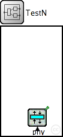
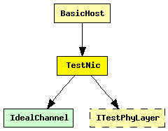
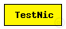

This documentation is released under the Creative Commons license
This documentation is released under the Creative Commons license(no description)
The following diagram shows usage relationships between types. Unresolved types are missing from the diagram. Click here to see the full picture.
The following diagram shows inheritance relationships for this type. Unresolved types are missing from the diagram. Click here to see the full picture.
| Name | Type | Description |
|---|---|---|
| BasicHost | compound module |
The BasicHost is a compound module that implements a very simple host. It only consists of basic modules and is the most basic host you can create for the MF |
| Name | Type | Default value | Description |
|---|---|---|---|
| connectionManagerName | string |
name of the ConnectionManager module |
|
| phyLayerType | string |
type of the physical layer |
| Name | Value | Description |
|---|---|---|
| display | bgb=101,180,white,,;bgp=10,10 |
| Name | Direction | Size | Description |
|---|---|---|---|
| radioIn | input |
radioIn gate for sendDirect |
| Name | Type | Default value | Description |
|---|---|---|---|
| phy.usePropagationDelay | bool |
Should transmission delay be simulated? |
module TestNic { parameters: string connectionManagerName; //name of the ConnectionManager module string phyLayerType; //type of the physical layer @display("bgb=101,180,white,,;bgp=10,10"); gates: input radioIn; // radioIn gate for sendDirect submodules: phy: <phyLayerType> like ITestPhyLayer { parameters: @display("p=60,150;i=prot3"); } connections: radioIn --> phy.radioIn; }
This documentation is released under the Creative Commons license